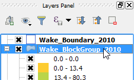

As you can see, the Wake_BlockGroup_2010 layer seems shifted relatively to the rest of the project. This may happen if data's CRS definition is wrong or incomplete. We need to fix this before we can use this layer correctly.
One way of fixing it is to set the correct CRS within the project. Let's do it.
On the Layers Panel:
The layer's item should be highlighted.

Once you have finished, click Move to next step.